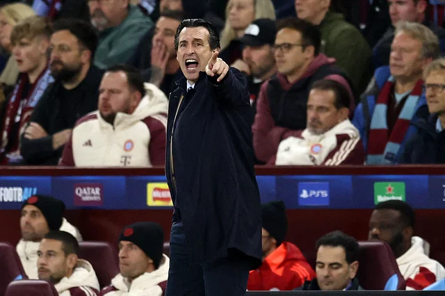

অপেক্ষাটা এক–দুই দশকের হলেও অ্যাস্টন ভিলা সমর্থকদের মনে হয়তো এতটা উত্তেজনা ভর করত না। অপেক্ষা যখন চার দশকের বেশি সময়ের, তখন তো আবেগের বাঁধ ভেঙে যাওয়াই স্বাভাবিক। দীর্ঘ ৪১ বছর পর ইউরোপের শীর্ষ ক্লাব প্রতিযোগিতার ম্যাচ ফিরেছে অ্যাস্টন ভিলার মাঠ ভিলা পার্কে। গ্যালারিতে তাই গগনবিদারী আওয়াজ ওঠাও স্বাভাবিক। কিন্তু তাতে যে এমিলিয়ানো মার্তিনেজের কানের তালা ফেটে যাওয়ার দশা!৪ বছর হলো অ্যাস্টন ভিলায় যোগ দিয়েছেন আর্জেন্টাইন গোলকিপার মার্তিনেজ। গতকাল রাতের আগপর্যন্ত ভিলা পার্কে দর্শকের চিৎকার, উদ্যাপন কখনো তাঁর কানে এতটা লাগেনি। তবে উপলক্ষও দেখতে হবে গতকাল রাতের। ১৯৮২–৮৩ মৌসুমের পর মানে ৪১ বছর পর চ্যাম্পিয়নস লিগে ফিরেছে অ্যাস্টন ভিলা। অর্থাৎ দীর্ঘ চার দশকের বেশি সময় পর ঘরের মাঠে ইউরোপের শীর্ষ ক্লাব প্রতিযোগিতার ম্যাচ দেখার সুযোগ পেয়েছিলেন ভিলার সমর্থকেরা।গতকাল রাতের আগে সর্বশেষ নিজেদের মাঠে ডিফেন্ডিং চ্যাম্পিয়ন হিসেবে চ্যাম্পিয়নস লিগের (তখন ইউরোপিয়ান কাপ) ম্যাচ খেলেছিল ভিলা। কারণ, ১৯৮১–৮২ মৌসুমে তারা চ্যাম্পিয়ন হয়েছিল। সব মিলিয়ে উদ্যাপনের উপলক্ষ তো ছিলই, তবে সেই উদ্যাপন বাঁধভাঙা হয়েছে অবিস্মরণীয় এক জয়ে। ঘরের মাঠে চ্যাম্পিয়নস লিগের ম্যাচ ফেরার লগ্নটি ভিলা স্মরণীয় করে রেখেছে ছয়বারের চ্যাম্পিয়ন বায়ার্ন মিউনিখকে ১–০ গোলে হারিয়ে।

১৯৮২ ইউরোপিয়ান কাপে (১৯৯২ থেকে চ্যাম্পিয়নস লিগ) এই বায়ার্নকে হারিয়েই শিরোপা জিতেছিল ভিলা। পরের মৌসুমে কোয়ার্টার ফাইনালে হেরেছিল জুভেন্টাসের কাছে। তারপর ৪১ বছরের অপেক্ষা। এবার চ্যাম্পিয়নস লিগে ফিরেই ঘরের মাঠে প্রথম ম্যাচে বায়ার্নের মতো ক্লাবকে হারিয়ে দেওয়ায় সমর্থকদের উদ্যাপন বাঁধভাঙা না হলে সেটাই হতো অস্বাভাবিক। আরও মজার ব্যাপার হলো, দর্শকের বাঁধভাঙা উদ্যাপনে ‘কানের তালা ফেটে গেছে’ ধরনের আনন্দপূর্ণ অভিযোগটি যিনি তুলেছেন, অমন উদ্যাপনের জন্য আসলে তিনিই দায়ী!
ম্যাচটি না দেখে থাকলে প্রশ্ন করতে পারেন—কেন? ৭৯ মিনিটে জন ডুরানের শটে ১–০ গোলে এগিয়ে গিয়েছিল ভিলা। শেষ পর্যন্ত জিতেছেও এই ব্যবধানেই। ম্যাচের শেষ দিকে সমতায় ফেরার একাধিক সুযোগ পেয়েছে বায়ার্ন। বিশেষ করে হ্যারি কেইনের হেডটি; মার্তিনেজ যা দারুণভাবে সেভ না করলে ভিলার সমর্থকদের উদ্যাপনটা পাগলপারা হতো না। শুধু কি তা–ই? গোটা ম্যাচে আরও ৬টি সেভ করেছেন মার্তিনেজ। তাহলে বলুন দোষটা কার? জয়ের পর মার্তিনেজ অবশ্য ‘দোষ’ চাপালেন ভিলার সমর্থকদের ওপর, যা শুনে ক্লাবটির সমর্থকেরা খুশিই হবেন, ‘এই ক্লাবে যোগ দেওয়ার পর এবারই সবচেয়ে বেশি আওয়াজ শুনলাম ভিলা পার্কে। একটা সময় গিয়ে কানে লেগেছে (সহ্য করা কঠিন)। আমি এখানে খেলতে ভালোবাসি। সমর্থকদের ভালোবাসি। এই জয়টা তাদের জন্য।’
৪২ বছর আগের সেই ফাইনালেও বায়ার্নকে ১–০ গোলে হারিয়েছিল ভিলা। সেই সময়ের তরুণ ভিলা সমর্থক স্টিফেন মোরলির বয়স এখন ৬৩ বছর। ভিলা চ্যাম্পিয়নস লিগ থেকে ছিটকে পড়ার পর ঘরের মাঠে আর কখনো এই প্রতিযোগিতার ম্যাচ দেখতে পারবেন কি না, তা নিয়ে সন্দেহ ছিল তাঁর। কিন্তু গতকাল রাতে সেই স্বপ্নপূরণের পর বার্তা সংস্থা এপিকে মোরলি বলেন, ‘ভাবিনি আবার কখনো (ঘরের মাঠে ম্যাচ) দেখার সুযোগ পাব। এটা অসাধারণ।’ আরও পড়ুন সালাহর কাছে লিভারপুলের ইউরোপায় নেমে যাওয়ার কোনো অজুহাত নেই ২৬ মে ২০২৩ সালাহর কাছে লিভারপুলের ইউরোপায় নেমে যাওয়ার কোনো অজুহাত নেই ইংল্যান্ডের শীর্ষ লিগে সাতবারের চ্যাম্পিয়ন অ্যাস্টন ভিলা পাঁচ বছর আগেও খেলেছে দ্বিতীয় বিভাগে। ২০২২ সালে প্রিমিয়ার লিগ থেকে অবনমনের খুব কাছাকাছি ছিল বার্মিংহামের ক্লাবটি। তখন উনাই এমেরি কোচের দায়িত্ব নিয়ে ধীরে ধীরে রং ফেরান ভিলার। এবার তো চ্যাম্পিয়নস লিগে ফিরেই টানা দুই ম্যাচ জিতল। এর মধ্যে শেষ ম্যাচে যাদের হারাল, সেই বায়ার্ন মিউনিখ চ্যাম্পিয়নস লিগের গ্রুপ পর্বে সর্বশেষ হেরেছিল ২০১৭ সালের ২৭ সেপ্টেম্বর পিএসজির বিপক্ষে এবং তখনো ফরাসি ক্লাবটির কোচ ছিলেন এই এমেরিই!
এরপর গ্রুপ পর্বে ৭ বছর ধরে টানা ৪১ ম্যাচ অপরাজিত থাকার পর সেই এমেরির ভিলার মুখোমুখি হয়ে আবার হারল বায়ার্ন। স্পেনের এই কোচের এমন স্মরণীয় জয় ভিলা পার্কে ৪০ হাজার দর্শকের মধ্যে থেকে দেখেছেন ক্লাবটির সমর্থক ও ব্রিটেনের রাজপরিবারের সদস্য প্রিন্স উইলিয়াম। ব্রিটেনের ভবিষ্যৎ রাজার সঙ্গে সাক্ষাতে কী কথা হয়েছে, তা ম্যাচ শেষে বলেছেন ভিলা কোচ এমেরি, ‘তাঁকে বলেছি, আজকের (গত রাতের) মতো দিনগুলোই সেরা মুহূর্ত।’ এমেরি জানিয়েছেন, চ্যাম্পিয়নস লিগে ফিরে ভিলা কত দূর যাবে, সেটি অজানা হলেও এই পথটা তাঁরা উপভোগ করতে চান, ‘জানি না, কোথায় (ভিলা যাবে)। তবে আমরা পথটা উপভোগ করব। আমরা আজ (কাল) কীভাবে খেলেছি, কাদের বিপক্ষে খেলেছি এবং তার পাশাপাশি ৪২ বছর আগে চ্যাম্পিয়নস লিগের ফাইনালও মনে রাখব। দিনটা বিশেষ ছিল।’
visit Prothomalo in google